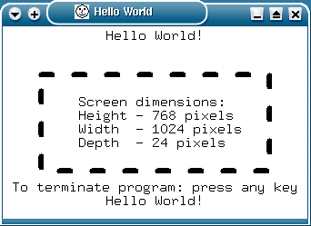
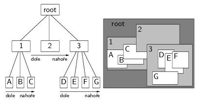
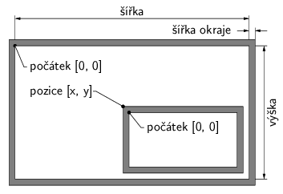
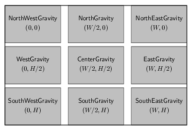

Knihovna Xlib zaji¹»uje elementární funkce X na stranì klienta. Aplikace se typicky nepí¹í pouze s pou¾itím Xlib, proto¾e takové programování je znaènì nepohodlné, jak uvidíme dále. Na rozdíl od toolkitù, Xlib neposkytuje widgety, tj. hotové prvky u¾ivatelského rozhraní, které mají vlastní logiku, umí se nakreslit a umí samy o sobì komplexnì reagovat na události. Napø. editaèní øádek v GTK+ nebo Qt po stisku klávesy pøidá znak do interní reprezentace zobrazeného textu, nakreslí ho na obrazovku a pomocí signálu dá vìdìt zbytku aplikace o zmìnì svého stavu. V Xlib máme k dispozici pouze funkce pro vytvoøení oken a manipulaci s nimi, pro kreslení a pro pøíjem událostí. Implementace editaèního øádku bude vypadat tak, ¾e si aplikace vytvoøí okno, nahraje font a bude pøijímat události. V reakci na Expose pøekreslí okno a KeyPress zpùsobí pøidání znaku a pøekreslení. Kdybychom chtìli dosáhnout stejné funkènosti, jakou poskytují toolkity, museli bychom se postarat je¹tì o dal¹í vìci, jako napø. cut&paste.
Xlib se pøíli¹ nehodí pro aplikaèní programování. Pøi psaní aplikace je lep¹í pou¾ít vhodný toolkit. Obèas v¹ak mù¾e být nutné volat funkce Xlib pro operace, které nemají podporu v toolkitu. Napø. historicky první X Toolkit nemìl vlastní kreslicí operace a pro ve¹keré kreslení se pou¾ívaly funkce z Xlib. Bez pou¾ití knihovny Xlib se samozøejmì neobejdou programátoøi toolkitù. Ale i pro toho, kdo nikdy funkce Xlib pøímo nepou¾ívá, je vhodné znát principy fungování této knihovny, aby pro nìj toolkit nebyl jen èerná skøíòka.
Základní náplní práce Xlib je pøeklad mezi C-èkovým API a zprávami X protokolu. X protokol pou¾ívá streamový soket. Lokálnì se komunikuje pøes unixový soket /tmp/.X11-unix/Xd, kde d je èíslo displeje. Pro sí»ový pøístup k X serveru se pou¾ívá TCP soket na portu 6000+d. Spojení v¾dy navazuje klient smìrem k serveru. Pokud server podporuje Shared Memory Extension a klient i server jsou na stejném poèítaèi, je mo¾né komunikaci urychlit tím, ¾e se nìkterá data (obrázky) pøená¹í pøes sdílenou pamì».
V X protokolu existují ètyøi typy paketù. Po¾adavky (requests) posílá klient serveru. Generuje je vìt¹ina volání Xlib, napø. funkce pro kreslení èáry, vytvoøení okna nebo dotaz na velikost okna. Pokud cílem po¾adavku není získat nìjakou hodnotu od X serveru, server na po¾adavek neodpovídá. Po¾adavky se neposílají jednotlivì, ale ukládají se do bufferu na stranì klienta. Celý buffer se po¹le na server najednou, kdy¾ je plný. Obsah bufferu se také posílá, jestli¾e program nemá ve frontì ¾ádnou èekající událost a zavolá funkci Xlib pro èekání na událost (XNextEvent) nebo jestli¾e se volá funkce, která vy¾aduje odpovìï od serveru. Tím je zaji¹tìno, ¾e ne¾ klient zaène èekat, server napø. vytvoøí a nakreslí okno, v nìm¾ chce aplikace pøijímat události. Poslední mo¾ností je explicitnì vynutit okam¾ité odeslání bufferu po¾adavkù funkcemi XFlush nebo XSync. To se hodí napø. pøi vykreslování animací, kdy je nutné obnovit obsah okna v urèitý èas nezávisle na pøíchozích událostech. Dávková komunikace se serverem se dá vypnout funkcí XSynchronize. Xlib pak posílá ka¾dý po¾adavek ihned a èeká, zda server nevrátí chybu. Synchronní re¾im není vhodné bì¾nì pou¾ívat, proto¾e je nìkolikanásobnì pomalej¹í. Hodí se v¹ak pro ladìní, aby klient nedostával chyby asynchronnì a se zpo¾dìním.
Druhý typ paketù jsou odpovìdi serveru (replies) na nìkteré po¾adavky klienta, napø. na dotaz o vlastnostech okna. Server klientovi dále posílá události (events) informující o u¾ivatelském vstupu, zmìnì rozlo¾ení oken, nebo obsahující zprávy od jiného klienta. Poslední typ paketù jsou chyby (errors), které informují o tom, ¾e se nepovedl nìkterý z pøedchozích po¾adavkù. Díky dávkovému zpracování po¾adavkù to nemusí být ten poslední. Chybu zachytí Xlib a zavolá na ni chybový handler, jen¾ standardnì vypí¹e chybové hlá¹ení a ukonèí program.
X server spravuje systémové zdroje poskytované klientùm pro pou¾ití v jejich GUI. Typy zdrojù X serveru jsou: okno (window), pixmapa (pixmap), paleta (colormap), kurzor (cursor), font a grafický kontext (graphics context). Klienti se na nì odkazují pomocí èíselného identifikátoru (ID). Tím, ¾e jsou data jako parametry oken, obrázky, znaky z fontu, apod. ulo¾ena v pamìti serveru, redukuje se objem dat pøená¹ených mezi klientem a serverem. S libovolným zdrojem X serveru mù¾e manipulovat ka¾dý klient, který zná jeho ID. Program tak mù¾e kreslit nebo èíst události v cizích oknech. Pøi odpojení klienta od serveru zru¹í X server v¹echny zdroje vytvoøené odpojeným klientem.
Pro úvodní seznámení s funkcemi Xlib si jako obvykle pøedvedeme program ve stylu „Hello World“. Program vytvoøí jediné okno a v nìm nakreslí obdélník a vypí¹e nìkolik øetìzcù, viz obr. 1. Po stisku klávesy nebo tlaèítka my¹i program skonèí. Celý zdrojový text je v souboru hello.c. Soubor hello_icon.h obsahuje definici ikony. Program pøelo¾íme a slinkujeme pøíkazem
gcc -o hello hello.c -I/usr/X11R6/include -L/usr/X11R6/lib -lX11Tato varianta programu „Hello World“ pochází z knihy Adrian Nye: Xlib Programming Manual (O'Reilly and Associates, Inc., 1992). Ponìkud pøekvapující je délka programu 353 øádek. To je dost znaèný rozdíl oproti programu pro GTK+ z 2. dílu (91 øádek) a Qt ze 7. dílu (14 øádek). Ji¾ toto srovnání cosi napovídá o (ne)vhodnosti Xlib pro bì¾né aplikaèní programování. Z dùvodu velikosti programu ho zde nebudeme podrobnì rozebírat øádek po øádku.

Obr. 1: Hello World v Xlib
Ve funkci main se klient nejprve pøipojí k X serveru voláním XOpenDisplay. Po úspì¹ném navázání spojení vytvoøí okno pomocí XCreateSimpleWindow. K oknu pøíslu¹í ikona vytvoøená funkcí XCreateBitmapFromData. Dále je tøeba sdìlit window manageru (pomocí XSetWMProperties) nìkteré informace o oknu, napø. titulek okna a ikony, odkaz na pixmapu ikony a minimální velikost okna. Pøed zahájením zpracování událostí je nutné øíct X serveru, které události má klientovi posílat – XSelectInput. Pøed zahájením kreslení je tøeba naèíst font funkcí XLoadQueryFont, vytvoøit grafický kontext funkcí XCreateGC a nastavit jeho parametry: XSetFont, XSetForeground, XSetLineAttributes a XSetDashes. Následuje namapování (zobrazení) okna pomocí XMapWindow. Tím je dokonèena inicializace programu a mù¾e být zahájen cyklus zpracování událostí.
Program v¾dy poèká na událost a pøeète ji voláním XNextEvent. Pak se rozhodne podle typu události (event.type). Událost Expose je obslou¾ena nakreslením obsahu okna s vyu¾itím funkcí XDrawString a XDrawRectangle. Událost ConfigureNotify informuje o zmìnì velikosti okna a program na ni reaguje pøepoèítáním umístìní grafiky v oknì a pøekreslením. Stisk klávesy (KeyPress) nebo tlaèítka my¹i (ButtonPress) zpùsobí ukonèení programu. Pøed ukonèením se uvolní alokované zdroje X serveru (XUnloadFont, XFreeGC) a klient zavøe spojení se serverem (XCloseDisplay). Tyto úklidové akce nejsou nezbytné, proto¾e ukonèení procesu zpùsobí zavøení soketu, které server detekuje a uvolní ve¹keré zdroje alokované klientem. Nicménì je vhodné volat alespoò XCloseDisplay, aby klient dostal pøípadné chyby, které mu server zatím neposlal.
Okno je obdélníková oblast na obrazovce, ve které lze kreslit a pøijímat události. Pokud server a Xlib podporují roz¹íøení Shape, je mo¾né vytváøet okna libovolných tvarù. Na ka¾dé obrazovce tvoøí okna stromovou strukturu. Koøen stromu je koøenové (root) okno, existující po celou dobu bìhu X serveru. Do root okna lze kreslit a lze v nìm pøijímat události, ale není mo¾né zmìnit jeho velikost nebo pozici. Kromì vztahù pøedkù a potomkù (ancestors, descendants) je ve stromì oken mezi sourozenci (synovskými okny stejného rodièe) definován tzv. stacking order urèující, jak se tito sourozenci navzájem zakrývají. Vztahy ve stromì oken jsou znázornìny na obr. 2.

Obr. 2: Strom oken a stacking order
Souøadnice uvnitø okna se poèítají od levého horního rohu doprava a dolù. Pozice okna se zadává relativnì vùèi rodièi. Okno mù¾e mít navíc okraj (rámeèek). Poèátek souøadnic okna je v takovém pøípadì uvnitø rámeèku, av¹ak pozice se vztahuje k bodu vnì rámeèku. Okraje oken se ale moc nepou¾ívají. Na obr. 3 jsou zobrazeny jednotlivé rozmìry tvoøící geometrii oken.

Obr. 3: Geometrie oken
Po vytvoøení existuje okno pouze jako datová struktura v pamìti X serveru. Aby bylo vidìt na obrazovce, je nutné ho namapovat funkcí XMapWindow a musí být namapování také v¹ichni jeho pøedci. Ani namapované okno nemusí být vidìt, pokud le¾í mimo plochu svého rodièe nebo je zakryto svými sourozenci nebo sourozenci pøedkù. Okno se typicky neobjeví hned po zavolání XMapWindow, proto¾e díky dávkové komunikaci se serverem mù¾e po¾adavek nìjakou dobu èekat v bufferu klienta. U top-level oken navíc do mapování vstupuje window manager.
Ka¾dé okno má sadu charakteristik, zadávaných pøi vytvoøení okna voláním XCreateWindow nebo XCreateSimpleWindow. Pozdìji je lze zji¹»ovat a nìkteré i mìnit pomocí funkcí Xlib (XReparentWindow, XGetGeometry, XGetWindowAttributes, XChangeWindowAttributes, atd.). Umístìní ve stromì oken a na obrazovce urèují rodièovské okno a konfigurace okna (pozice, ¹íøka, vý¹ka, ¹íøka okraje a pozice v rámci stacking order). Visual definuje zpùsob pøepoètu hodnot jednotlivých pixelù na barvy podle barevné palety. Poèet bitù pou¾itých na ka¾dý pixel udává bitová hloubka. Okno má tøídu, která mù¾e být InputOutput (do okna lze kreslit a lze v nìm pøijímat události), nebo InputOnly (v oknì lze pøijímat události, ale nelze do nìj kreslit a okno není vidìt). InputOnly se hodí, pokud potøebujeme speciální obsluhu událostí nebo jiný tvar kurzoru v urèité oblasti okna. Zde je tøeba zmínit, ¾e neexistují ¾ádná OutputOnly okna, proto¾e okno s libovolným grafickým obsahem musí reagovat na po¾adavky serveru o pøekreslení, zasílané klientovi ve formì událostí Expose. Poslední z charakteristik okna jsou atributy.
Atributù okna je celá øada. Dá se nastavit barva pozadí okna, nebo lze alternativnì na pozadí umístit pixmapu. Pokud má okno okraj, dá se nastavovat i jeho barva èi pixmapa. Hodnota bit gravity urèuje, co se stane s obsahem okna pøi zmìnì velikosti. Standardní hodnota je ForgetGravity, tj. okno se sma¾e a musí se pøekreslit. Dal¹í mo¾nosti jsou znázornìny na obr. 4. Pùvodní obsah se zachová a pøesune se relativnì vùèi poèátku okna. Pro nepokryté oblasti X server vygeneruje události Expose a tím zajistí jejich vykreslení. Server nemusí bit gravity implementovat a mù¾e v¾dy obsah okna celý smazat a nechat pøekreslit. Window gravity øíká, co se má pøi zmìnì velikosti stát se synovskými okny. Standardní je NorthWestGravity, tj. relativní poloha vùèi poèátku okna se nemìní. Dal¹í mo¾nosti jsou UnmapGravity (synovská okna se odmapují), StaticGravity (nemìní se poloha vzhledem ke koøenovému oknu) a hodnoty z obr. 4. Hodnota backing store øíká, zda si má X server pamatovat obsah okna, pokud je pøekryto jiným oknem. Po odkrytí pak mù¾e okno obnovit bez toho, aby posílal událost Expose klientovi. Duální funkci má atribut save under, který urèuje, zda si má X server pamatovat obsah okna pøekrytého oknem s nastaveným save under. To se hodí pro okna, která jsou na obrazovce zobrazena jen krátce, jako napø. popup menu. Server nemusí backing store ani save under podporovat. V ka¾dém oknì si mù¾e klient nastavit masku událostí, které chce v tomto oknì pøijímat. Maska je samostatná pro ka¾dé okno a klienta, tudí¾ rùzní klienti mohou ve stejném oknì pøijímat rùzné mno¾iny událostí. Jestli¾e má jednu událost vybranou více klientù, ka¾dý z nich dostane její kopii. Události z my¹i a klávesnice, je¾ nejsou obslou¾eny v oknì, ve kterém vznikly, se propagují smìrem ke koøeni. Propagace se zastaví, pokud nìkteré okno na cestì událost pøijme, nebo událost dorazí do koøenového okna nebo do okna, ve kterém je její propagace zakázána atributem do_not_propagate_mask. Zobrazování a manipulace s top-level okny je obvykle øízena window managerem. Nìkterá okna – popup menu, tooltipy, apod. – se potøebují vyhnout interakci s window managerem, co¾ zaøídí atribut override_redirect. Zbývající atributy okna jsou barevná paleta a tvar kurzoru.

Obr. 4: Bit a window ravity